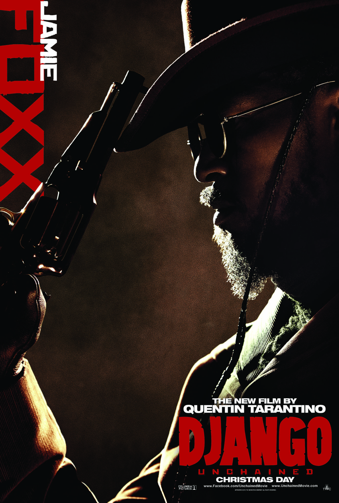

DJANGO
Jamie Foxx
DJANGO
黒人奴隷としてカルーカン大農園にいたところ、
同じ黒人奴隷のブルームヒルダを妻とする。
2人で逃げ出そうとして捕まり、顔に逃亡者（runaway）を意味する「r」の焼き印を押される。
ブルームヒルダとは別々の場所に売られことになり、スペック兄弟に買い取られる。
背中にはこれまでに打たれてきたムチでできた無数の傷痕がある。
名前のスペルは「Django」で、Dは発音しない。
"D-J-A-N-G-O.
The D is silent."
